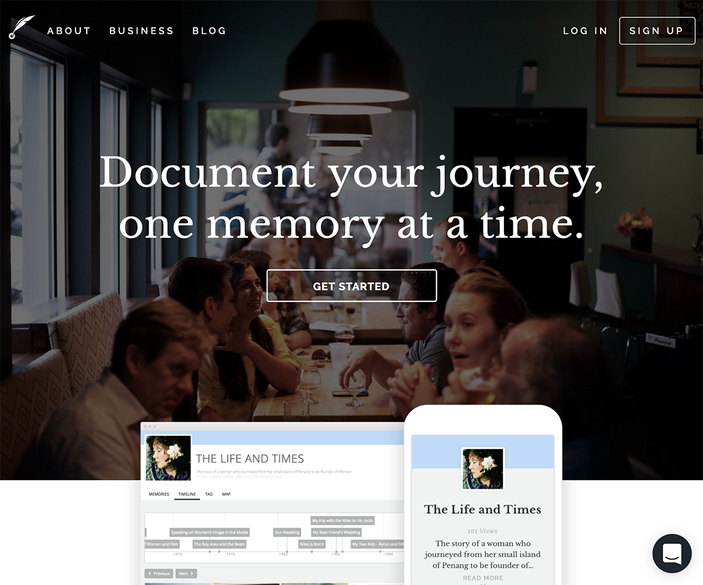

Portfolio*
The History Project
Visit App
Joined September 2015
The History Project empowers families and organizations to connect memories across media to build experiential stories that transcend generations. Our set of online and mobile tools allows users to intelligently collect, beautifully curate and delightfully collaborate in building their personal life stories.
The History Project is built with Laravel and PHP and we later integrated React. The backend utilized mySQL and we implement many tools and libraries, including Sass, Bootstrap, and jQuery. We utilize many APIs, including Facebook, Google Drive, Gmail, Dropbox, and Instagram.
I joined the team within the first year as the fourth engineer as V2 was getting ready to launch. I often touch the backend but focus on the front and work closely with the design team. Additionally, I am diving into Xcode to maintain our mobile iOS app.
Create
Visit App | GitHub Repository
Created April 2015
Create is a daily art prompt web app built with Node.js, Express, Postgres, and Bootstrap, integrating authentication and authorization. Utilizing Wordnik's API, a new word appears every day to provide inspiration. Users, called creators, use the prompt to make something in response, which can be posted to the site. All posts ("creations") can be viewed publicly, as well users' public profiles.
The MVP simply allows for a written creation (poem, short story, etc.), but the goal is to add an image upload option so that photographers and visual artists can contribute as well. It has authorization and authentication to allow users to post and delete creations. It currently has a one-to-many association with many creations belonging to one user, but I would like to add a prompt model.
Create is a daily art prompt web app built with Node.js, Express, and Postgres. Utilizing Wordnik’s API, a new word appears every day to provide inspiration and users can post the creations they made in response to the prompt.

Create
JavaScript, Node.js, Express, PostgreSQL, Wordnik API
Epoch
Visit App | GitHub Repository
Created April 2015
Epoch is a time banking web app built with Ruby on Rails, utilizing AJAX, Bootstrap, Devise, and Twilio's API. Epoch was built by myself, James Bradley, Lyn Muldrow, and Steven Gordon. In addition to acting as project manager for three other engineers, my main tasks were authentication and authorization, constructing the User controller and views, and styling.
Epoch allows users to receive services using the currency of their time, which is earned by providing other users with their own services. Every hour of work completed is removed from the recipient's account and added to the provider's, which can then be spent getting help from another user. Users can list services they can provide as well as services they need. When a request is made, a text message alert is sent to the the user receiving the request. An exchange page is generated when a request is made and, once accepted, they receive each other's contact information. After service is rendered, this is confirmed on the site and the hour is transferred from the recipient to the provider's time bank. A text message alert is sent to the user at each of the 4 stages of the exchange process--when it is proposed, accepted, delivered, and confirmed.
Epoch is a time banking web app built with Ruby on Rails. Every hour of work a user completes for another is removed from the recipient's account and added to the provider's, which can then be spent getting help from another user.

Epoch
Ruby on Rails, AJAX, Devise, Twilio API
MindKit
GitHub Repository
Created June 2015
MindKit is a hybrid mobile app that acts as a toolkit for combating depression on a daily basis, largely through the use of cognitive behavioral therapy (CBT). It is built with Ionic using AngularJS and the database is connected with a NodeJS, Express, and PostgreSQL backend API. It is currently in beta in the Ionic View app, but once completed will be available for iOS and Android.
The initial MVP is the thought log, in which Ionic-Wizard takes the user through a series of questions typical of a CBT automatic negative thought log to analyze a situation and their resulting thoughts and emotions. In the final step, the user is presented with their initial emotions and the strengths at which they reported feeling them and is asked to re-rate the emotions after going through the thought log. The differences between the initial and new emotions are averaged out and the user is shown the percentage of their improvement on this situation. They are also shown a lifetime improvement average and a graph of each entry's improvement on their progress page to see how the exercises are helping.
MindKit is a hybrid mobile app that acts as a toolkit for combating depression on a daily basis, largely through the use of cognitive behavioral therapy (CBT). It is currently in beta in the Ionic View app.

MindKit
Ionic, AngularJS, Node.js, Express, PostgreSQL
*This section will get updated "someday"